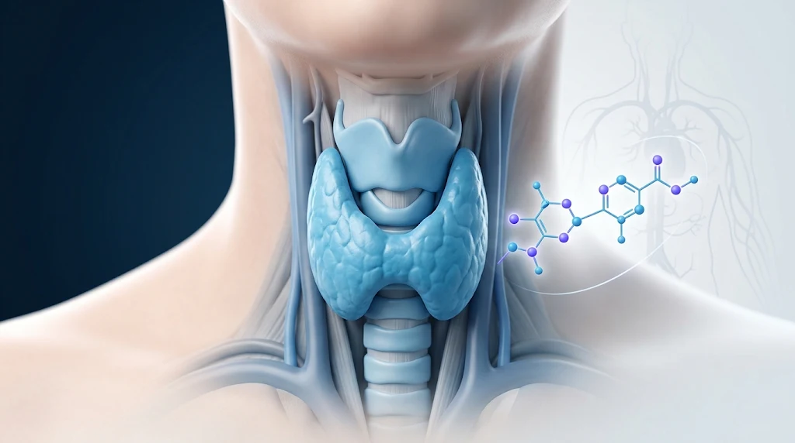

Enfermedades endocrinas y metabólicas
Hipotiroidismo: lo que necesitas saber
Aprende qué es, por qué ocurre, cómo se diagnostica y cómo se controla con tratamiento.

¿Qué es el hipotiroidismo?
El hipotiroidismo, también llamado tiroides hipoactiva, ocurre cuando la glándula tiroides no produce suficientes hormonas tiroideas para satisfacer las necesidades del cuerpo. La tiroides es una pequeña glándula con forma de mariposa ubicada en la parte delantera del cuello.[1]
Las hormonas tiroideas controlan la forma en que el cuerpo usa la energía y, por eso, afectan a casi todos los órganos, incluso al ritmo del corazón. Cuando faltan, muchas funciones del organismo se enlentecen.[1]
Es un problema frecuente: en Estados Unidos afecta a cerca de 5 de cada 100 personas de 12 años o más, aunque la mayoría de los casos son leves o tienen pocos síntomas evidentes.[1] Es más común en las mujeres que en los hombres y en las personas mayores de 60 años.[1]
Causas y factores de riesgo
El hipotiroidismo tiene varias causas:[1]
- Enfermedad de Hashimoto: es la causa más frecuente. Es un trastorno autoinmune en el que el sistema inmunitario ataca la tiroides, que se inflama y deja de producir suficientes hormonas.
- Tiroiditis: inflamación de la tiroides que, tras una fase inicial de exceso de hormona, puede dar lugar a un hipotiroidismo. Incluye la tiroiditis posparto, que aparece después de un parto.
- Hipotiroidismo congénito: presente desde el nacimiento.
- Cirugía de la tiroides: la extirpación total siempre produce hipotiroidismo; la parcial puede producirlo.
- Radiación sobre la tiroides: el yodo radiactivo que se usa para tratar el hipertiroidismo destruye gradualmente las células de la glándula, y la radioterapia en cabeza o cuello también puede dañarla.
- Algunos medicamentos: ciertos medicamentos para el corazón, para el trastorno bipolar y para el cáncer pueden interferir con la producción de hormonas tiroideas.
Con menos frecuencia, el hipotiroidismo se debe a un exceso o a una falta de yodo en la dieta, o a trastornos de la glándula hipófisis o del hipotálamo.[1]
Tienes más probabilidades de desarrollarlo si:[1]
- Has tenido antes un problema de tiroides, como un bocio.
- Te han operado la tiroides o recibido yodo radiactivo.
- Has recibido radioterapia en la tiroides, el cuello o el pecho.
- Tienes antecedentes familiares de enfermedad de la tiroides.
- Estuviste embarazada en los últimos 6 meses.
- Tienes síndrome de Turner.
- Tienes otras enfermedades como celiaquía, síndrome de Sjögren, anemia perniciosa, diabetes tipo 1 o tipo 2, artritis reumatoide o lupus.
La enfermedad de Hashimoto es de 4 a 10 veces más frecuente en las mujeres y suele aparecer entre los 30 y los 50 años, aunque puede presentarse en adolescentes y mujeres jóvenes. El riesgo aumenta si hay familiares con la enfermedad.[2]
¿Cuáles son los síntomas?
Los síntomas varían de una persona a otra. Entre los más comunes se encuentran:[1]
- Cansancio.
- Aumento de peso.
- Mala tolerancia al frío.
- Dolor en las articulaciones y los músculos.
- Piel seca y cabello seco o fino.
- Menstruaciones abundantes o irregulares, o problemas de fertilidad.
- Latidos del corazón más lentos.
- Depresión.
Además, como el hipotiroidismo se desarrolla lentamente, es posible no notar síntomas durante meses o incluso años.[1] En la enfermedad de Hashimoto, la tiroides puede agrandarse (bocio) y hacer que el frente del cuello se vea hinchado, aunque generalmente no duele.[2]
Muchos de estos síntomas, especialmente el cansancio y el aumento de peso, son muy frecuentes y no significan necesariamente que haya un problema de tiroides. El diagnóstico no puede basarse solo en los síntomas.[1]
Cuándo buscar atención urgente: en casos muy raros y graves de hipotiroidismo no tratado puede aparecer el coma mixedematoso, una forma extrema en la que las funciones del cuerpo se enlentecen hasta un punto que pone en riesgo la vida y que requiere tratamiento médico inmediato.[1] Si una persona con hipotiroidismo presenta somnolencia extrema, confusión o pérdida del conocimiento, debe acudir de inmediato a urgencias.
Complicaciones del hipotiroidismo no tratado
Si no se trata, el hipotiroidismo puede provocar varios problemas de salud:[2]
- **Colesterol elevado:** el hipotiroidismo puede contribuir al aumento del colesterol. Por eso, cuando se detecta colesterol elevado, el médico puede considerar evaluar la función tiroidea para descartar esta causa.[1]
- Enfermedad del corazón e insuficiencia cardíaca.
- Presión arterial alta.
- Problemas durante el embarazo.
- Coma mixedematoso, una complicación rara pero potencialmente mortal.
En los recién nacidos, el hipotiroidismo congénito no tratado puede causar discapacidad intelectual y retraso del crecimiento. El tratamiento temprano evita estos problemas, y por eso a la mayoría de los recién nacidos se les hace una prueba de detección.[1]
La buena noticia es que el hipotiroidismo se puede controlar bien con tratamiento y seguimiento regular.[2]
¿Cómo se diagnostica el hipotiroidismo?
El médico realiza una historia clínica y un examen físico, y solicita análisis de sangre y, en ocasiones, estudios de imagen para confirmar el diagnóstico y buscar la causa.[1]
En personas sin sospecha de enfermedad de la hipófisis o del hipotálamo, la prueba inicial suele ser la hormona estimulante de la tiroides (TSH). Si está elevada, se mide la tiroxina libre (T4 libre) para confirmar el diagnóstico y determinar su gravedad.[5] Cuando la TSH está elevada y la T4 libre permanece dentro del intervalo de referencia, se denomina hipotiroidismo subclínico. En cambio, cuando la TSH está elevada y la T4 libre está disminuida, se habla de hipotiroidismo primario manifiesto.[5]
Si existe sospecha de una alteración de la hipófisis o del hipotálamo, deben evaluarse tanto la TSH como la T4 libre, ya que en el hipotiroidismo central la TSH puede no estar elevada.
Si se sospecha enfermedad de Hashimoto, pueden medirse los anticuerpos contra la peroxidasa tiroidea (anti-TPO), que suelen estar elevados en las personas con esta enfermedad. Si los anticuerpos son negativos, pero persiste la sospecha clínica, el médico valorará otros estudios según los hallazgos de la exploración física y los resultados de laboratorio. La ecografía se utiliza principalmente cuando se sospechan alteraciones estructurales de la glándula, como bocio o nódulos.[2]
Aspectos que el médico tiene en cuenta:
- Un resultado alterado no siempre indica enfermedad de la tiroides: algunos medicamentos, enfermedades agudas y trastornos de la hipófisis o del hipotálamo también pueden alterar la TSH.[5]
- En un estudio con adultos mayores europeos, el 60,8 % de quienes tenían hipotiroidismo subclínico normalizó su función tiroidea de forma espontánea en un año. Por eso, a menudo conviene repetir la prueba antes de decidir un tratamiento.[5]
- Si tomas suplementos de biotina, informa al médico y al laboratorio antes de realizarte las pruebas. La biotina puede interferir con algunos análisis de función tiroidea y alterar sus resultados. Según la dosis y el método utilizado por el laboratorio, podrían recomendarte suspenderla temporalmente antes de la extracción.[5]
- Las mujeres que tienen dificultad para quedar embarazadas suelen hacerse pruebas de tiroides, porque el hipotiroidismo puede causar problemas de fertilidad.[1]
El Grupo de Trabajo de Servicios Preventivos de Estados Unidos (USPSTF) considera que no hay pruebas suficientes para recomendar el cribado de enfermedad tiroidea en adultos sin síntomas que no estén embarazadas.[5] Por eso las pruebas se solicitan cuando hay síntomas, factores de riesgo o sospecha clínica.
Tratamiento
El hipotiroidismo se trata reemplazando las hormonas que la tiroides ya no puede producir. El medicamento que se utiliza es la levotiroxina, una hormona tiroidea idéntica a la que produce una tiroides sana.[1] Es el tratamiento recomendado por las guías de la Asociación Americana de la Tiroides (ATA).[3] Se presenta habitualmente en comprimidos, aunque también existe en forma líquida y en cápsulas blandas, que pueden ayudar a personas con problemas digestivos que dificultan su absorción.[1]
Cómo tomar la levotiroxina
- La levotiroxina suele tomarse con agua, con el estómago vacío, entre 30 y 60 minutos antes del desayuno. También puede administrarse por la noche, siempre que hayan transcurrido varias horas desde la última comida y se mantenga un horario constante.[2]
- Los suplementos de hierro y calcio, así como algunos medicamentos, pueden disminuir su absorción. Por lo general, se recomienda separar su administración de la levotiroxina al menos 4 horas. El café y algunos alimentos también pueden interferir con su absorción.
- No suspendas el tratamiento ni modifiques la dosis sin consultar previamente con tu médico.[2]
Seguimiento
Unas 6 a 8 semanas después de empezar el tratamiento se realiza un análisis de sangre para ajustar la dosis si hace falta, y se repite cada vez que la dosis cambia. Cuando se alcanza una dosis adecuada, el análisis suele repetirse a los 6 meses y luego una vez al año.[1] La dosis se ajusta según la TSH.[5]
Tomar demasiada hormona tiroidea puede causar problemas graves, como fibrilación auricular u osteoporosis.[1] Con la dosis correcta y con controles regulares, el hipotiroidismo puede controlarse bien.[1]
Hipotiroidismo subclínico: ¿siempre se trata?
No. El tratamiento depende de la concentración de TSH, la edad, los síntomas, los anticuerpos anti-TPO y otras condiciones clínicas.
En adultos con TSH igual o superior a 10 mUI/L, confirmada en dos mediciones separadas por aproximadamente tres meses, suele considerarse el tratamiento con levotiroxina.
Cuando la TSH está elevada, pero es inferior a 10 mUI/L, el médico puede optar por vigilar la función tiroidea o considerar un tratamiento individualizado, especialmente si existen síntomas persistentes u otros factores que aumentan el riesgo de progresión.
La presencia de anticuerpos anti-TPO puede apoyar el diagnóstico de tiroiditis autoinmune y ayudar a estimar el riesgo de progresión, pero no significa que todas las personas deban recibir tratamiento.
Por eso, no todas las personas con hipotiroidismo subclínico necesitan medicación.[5]
Alimentación y yodo
La tiroides necesita yodo para producir sus hormonas. Sin embargo, tanto la deficiencia como el consumo excesivo pueden afectar su funcionamiento. En personas con enfermedad de Hashimoto u otros trastornos tiroideos autoinmunes, un exceso de yodo puede empeorar la alteración de la función tiroidea. Algunas fuentes con concentraciones elevadas de este mineral son las algas marinas, como el kelp y la dulse, así como determinados suplementos de yodo.[1]
Esto no significa que debas evitar todos los alimentos que contienen yodo, ya que es un nutriente esencial para el organismo. Lo importante es evitar el consumo excesivo y consultar con el equipo de salud antes de utilizar suplementos.[2]
Importante: no se debe iniciar, suspender ni modificar el tratamiento tiroideo sin consultar previamente con el profesional responsable de la atención.
Hipotiroidismo y embarazo
El hipotiroidismo manifiesto sin tratamiento o con un control inadecuado durante el embarazo puede aumentar el riesgo de complicaciones para la madre y el bebé, como pérdida del embarazo, hipertensión gestacional y parto prematuro. También puede afectar el desarrollo del bebé. La levotiroxina es el tratamiento indicado y puede utilizarse de forma segura durante el embarazo.
Las necesidades de hormona tiroidea suelen aumentar durante la gestación. Por eso, las mujeres que ya reciben levotiroxina necesitan una evaluación temprana y controles periódicos de la función tiroidea para ajustar la dosis cuando sea necesario. También es importante separar la levotiroxina de los suplementos prenatales que contienen hierro o calcio, ya que pueden disminuir su absorción.
Si tomas levotiroxina y descubres que estás embarazada, contacta cuanto antes con tu médico para revisar el tratamiento y solicitar los análisis correspondientes. No modifiques la dosis por tu cuenta. Si planeas un embarazo y tienes antecedentes de enfermedad tiroidea, consulta antes de la concepción para evaluar tu función tiroidea.
¿Cuándo consultar al médico?
- Si presentas síntomas persistentes que podrían relacionarse con una alteración tiroidea, especialmente si tienes antecedentes familiares de enfermedad de la tiroides o padeces otra enfermedad autoinmune.
- Si tienes el colesterol alto o dificultades para quedar embarazada, para que valoren si es necesario estudiar la tiroides.[1]
- Si notas hinchazón o un bulto en la parte delantera del cuello.
- Si ya tomas levotiroxina y tienes síntomas que no mejoran, dudas sobre cómo tomarla o síntomas de exceso de hormona, como palpitaciones.
- Si estás en tratamiento y quedas embarazada: contacta a tu médico de inmediato.[1]
- De inmediato, si presentas los signos de alarma descritos en la sección de síntomas.
Aviso: este artículo tiene fines informativos y no sustituye la valoración de un profesional de salud. No aborda en detalle el hipotiroidismo congénito ni el manejo de la tiroides durante el embarazo, que requieren un seguimiento especializado.
Referencias científicas
- National Institute of Diabetes and Digestive and Kidney Diseases. Hypothyroidism (Underactive Thyroid) [Internet]. Bethesda (MD): NIH; revisado en marzo de 2021 [consultado el 8 de noviembre de 2026]. Disponible en inglés. Ver documento original.
- National Institute of Diabetes and Digestive and Kidney Diseases. Hashimoto's Disease [Internet]. Bethesda (MD): NIH; revisado en junio de 2021 [consultado el 8 de noviembre de 2026]. Disponible en inglés. Ver documento original.
- Jonklaas J, Bianco AC, Bauer AJ, et al.; American Thyroid Association Task Force on Thyroid Hormone Replacement. Guidelines for the treatment of hypothyroidism: prepared by the American Thyroid Association Task Force on Thyroid Hormone Replacement. Thyroid. 2014;24(12):1670-1751. doi:10.1089/thy.2014.0028. Ver documento original.
- National Institute for Health and Care Excellence. Thyroid disease: assessment and management. NICE guideline NG145 [Internet]. London: NICE; 2019 [actualizado en 2023]. Disponible en: Ver documento original.
- Nelson M. Thinking through testing for primary thyroid disease. Am Fam Physician. 2025;112(3):247-248. Ver documento original.
- Korevaar TIM, Leung AM, Alexander EK, et al. American Thyroid Association 2026 Guidelines for Thyroid Disease in Preconception, Pregnancy, and Postpartum. Thyroid. 2026;36(5):481-544. doi:10.1177/10507256261445624. Disponible en: Ver documento original.
- US Preventive Services Task Force. Thyroid Dysfunction: Screening [Internet]. Rockville (MD): USPSTF; 2015 [consultado el 8 de noviembre de 2026]. Disponible en:Ver documento original.